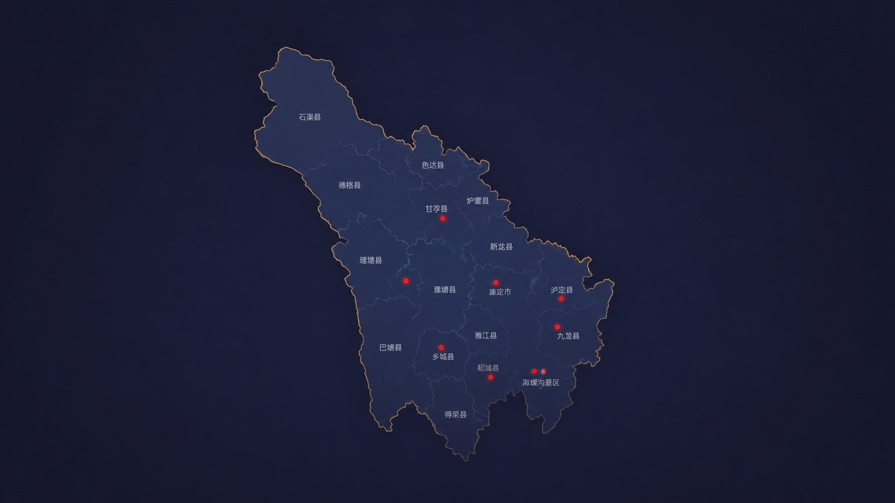

0筛选结果
地图悬停提示
列表卡片入口
详情统一模板
MAP
项目地图
地图采用 object-fit: contain，点位层自动对齐图片可见区域，缩放下坐标稳定。

LIST
项目筛选
支持按类型 / 地区 / 年度筛选，卡片点击进入项目详情入口。
地图采用 object-fit: contain，点位层自动对齐图片可见区域，缩放下坐标稳定。

支持按类型 / 地区 / 年度筛选，卡片点击进入项目详情入口。